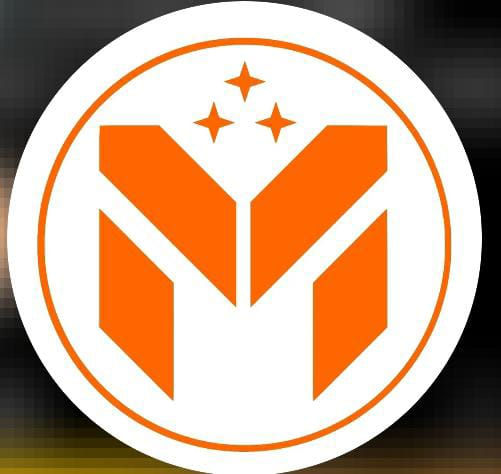
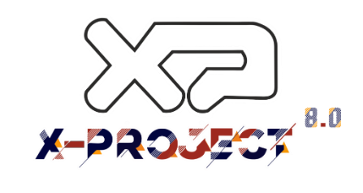
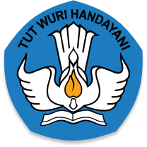

AKTIFITAS SAYA SELAMA BERKULIAH DI UPN "VETERAN" JAWA TIMUR

Gambar 1
Pada semester 2 saya melakukan kegiatan kaderisasi fakultas. Pada acara kaderisasi ini saya menjadi agian angota pada divisi senior pendamping.

Gambar 2
Pada semester 3 saya mengikuti suatu kompetisi di Universitas Surabaya. Kompetisi ini merupakan kompetisi
UI / UX Design Tingkat Kampus dan saya berhasil mendapatkan posisi Finalis 5 Besar dalam kompetisi tersebut.

Gambar 3
Beasiswa Unggulan ini merupakan beasiswa yang diadakan oleh Kemendikbudristek setiap tahun, dan merupakan program
Beasiswa yang sangat bergengsi dimana di setiap penjuru dunia mengikuti beasiswa ini, namun naas saya belum berhasil
mendapatkan beasiswa tersebut. Semoga pada kesempatan lain bisa mendapatkan beasiswa ini Aamiin.